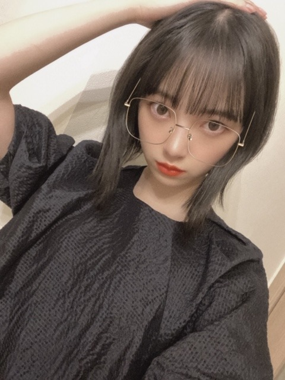
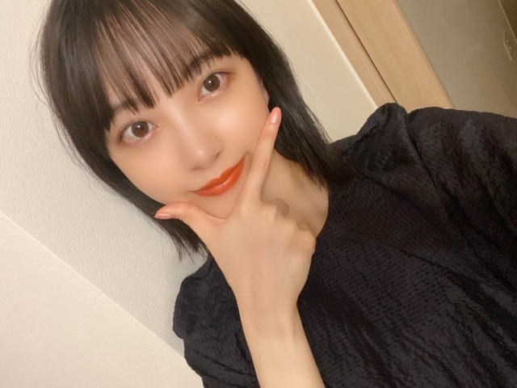

2020/0704Satシンプルる
こんばんは
堀未央奈です(^.^)
相変わらず歌詞を見ながら
曲を聞くのにハマっています
やはり好きなのは
YUIさんのwhy?という曲の
"どうして人は言葉を持ったのだろう？
心が見えにくくなる"という歌詞
心が見えるのも
心が見えないのも
言葉ないのも
言葉あるのも
どっちにしても難しいってこと
色々考えさせられますね、
RADWIMPSさんの猫じゃらしの
"この言葉ばかりに頼り切った日々が
名もない世界の鍵を閉めたんだ"
もすきだなぁ
みなさんの好きな歌の好きな歌詞はありますか？




無地の服がおおいです
シンプルです
何もかもシンプルがいいです
みなさんに質問
安定か挑戦
どちらが好きですか？
では(^.^)
2020/07/04 18:00
コメント(475)
未央奈～、こんばんわ 今日は兵庫県も凄い雨やったでぇ
今日は兵庫県も凄い雨やったでぇ 今日は午前中から午後にかけて出かけてたぁ
今日は午前中から午後にかけて出かけてたぁ 雨の中で大変やったけど用事が終わらせられて良かったよぉ
雨の中で大変やったけど用事が終わらせられて良かったよぉ
あと、今日は「いつかの待ち合わせ場所」の楽天BOOKSの特典メイキング映像観たよぉ 動画の未央奈めっちゃ素の表情が良かったなぁ。楽しそうだったし、ずっと笑顔やったから観てるこっちも楽しくなって30分あっという間だったよぉ写真集で見た街の中での表情がやっぱり素の表情の未央奈だったんだぁって改めて動画を観て分かって良かったなぁ
動画の未央奈めっちゃ素の表情が良かったなぁ。楽しそうだったし、ずっと笑顔やったから観てるこっちも楽しくなって30分あっという間だったよぉ写真集で見た街の中での表情がやっぱり素の表情の未央奈だったんだぁって改めて動画を観て分かって良かったなぁ めっちゃ可愛いかったよ
めっちゃ可愛いかったよ
未央奈大好きやぁ～
あと、今日は「いつかの待ち合わせ場所」の楽天BOOKSの特典メイキング映像観たよぉ
未央奈大好きやぁ～
自分は失敗を恐れて安定をとるので挑戦をする人に凄く憧れと尊敬を持ちます。
未央奈さん、こんばんは。
UVERworldさんの「Fight For Liberty」の歌詞が、強すぎるほどのメッセージ性があって大好きです。
「永い間雨に打たれ過ぎた 一途な希望と未来が僕を裏切るカルマ」が一番心が震えたリリックです。
この曲は「宇宙戦艦ヤマト2199」というアニメのOP曲で、その骨太で壮大な世界観と見事にシンクロしていました。
UVERworldさんの楽曲で一番好きです。
この曲の歌詞を愛する私なので、安定という言葉は100万光年の彼方に置いてきてしまいました。
なので自分の人生のラストまで挑戦と向上をして行きます。
でも挑戦も安定もどちらも大切ですね。
精神的にも経済的にも安定することは、人生の目的でもあるだろうし。
どっちが大切かって言うのは難しいですね。
レコメンは楽しかったですね。
未央奈さんがレコメンを卒業してしまったために、多くのレコメン難民が出たことでしょう(笑)
また未央奈さんMCのラジオ番組を楽しみにしてます。
それではまた
UVERworldさんの「Fight For Liberty」の歌詞が、強すぎるほどのメッセージ性があって大好きです。
「永い間雨に打たれ過ぎた 一途な希望と未来が僕を裏切るカルマ」が一番心が震えたリリックです。
この曲は「宇宙戦艦ヤマト2199」というアニメのOP曲で、その骨太で壮大な世界観と見事にシンクロしていました。
UVERworldさんの楽曲で一番好きです。
この曲の歌詞を愛する私なので、安定という言葉は100万光年の彼方に置いてきてしまいました。
なので自分の人生のラストまで挑戦と向上をして行きます。
でも挑戦も安定もどちらも大切ですね。
精神的にも経済的にも安定することは、人生の目的でもあるだろうし。
どっちが大切かって言うのは難しいですね。
レコメンは楽しかったですね。
未央奈さんがレコメンを卒業してしまったために、多くのレコメン難民が出たことでしょう(笑)
また未央奈さんMCのラジオ番組を楽しみにしてます。
それではまた
こんばんは、未央奈ちゃん
ブログ更新してくれて、いつもありがとうね！
『好きな歌の好きな歌詞』は、何個かあって、１つは乃木坂46さんの『制服のマネキン』の『１歩目を踏み出してみなけりゃ何も始まらないよ。』が好きです！未央奈ちゃんがこの曲を聞いて、乃木坂のオーディションを受けてくれる事を決意してくれたように、私にも『何事もやってみなけりゃ始まらない。』って凄く勇気をくれるんです。
荒野行動でも、普通の時でも、敵に立ち向かったり、物事の決断に対してどうするか迷った時はこの言葉を聞いて、いつも前に進めている気がするんです。
そして、２つ目は乃木坂46さんの『インフルエンサー』で、『外見よりももっと深く恋は内面覗く事さ、君らしさに溺れてしまう。』です！
本当にそうだよね！って思える歌詞であり、言葉だし、この曲を聞いてから、最初から人を外見で判断するんじゃなくて、色んな人と関わっていこうって思い直す事が出来た言葉だったんです。それからは、その人らしさというか内面の美しさに夢中になっている私もいれて、嬉しかったです。
最後の曲も乃木坂46さんの『別れ際、もっと好きになる』から、『人は誰もどんな別れ際でも、これが最後になってしまったらと不安に思うもの。その背中を目で追ったら切なさが溢れる、泣きそう。』です。
今まで誰かとお会いして、接して、別れる時に『また会えるだろう。』って何にも意識していなかったけれど、この曲を聞いてからは『それが当たり前じゃないんだ。いつが最後になるか分からないから、この人と今日を最後だと思って、それ位の気持ちで人でも動物でも接していかないといけない！』って思えたんです。
良い意味でとても『焦り』を感じさせてくれた１曲でした。
『安定か挑戦』は私は本当は『安定しつつも、挑戦し続けていく人生に憧れる』けれど、いつも何だかんだ言っては『挑戦する事で傷付く事を恐れて安定ばかりを求める自分にいつも腹が立ちます。』
だけど、この『安定か挑戦』どちらが好きですか？という未央奈ちゃんのブログを見て、『ハッ！と何かに気付かされた自分がいました。』
今までのブログもこのブログも未来のこれからのブログも未央奈ちゃんがギュッ！と詰まっているような気がとてもして、『いつも全部の未央奈ちゃんのブログを大切にしています。』
『それは全て全部全部未央奈ちゃんのお蔭なんです。』
後、歌詞じゃないけど、未央奈ちゃんの『私は私を追いかける。』っていう言葉も凄く大好き！
お疲れ様です、堀さん。
そうですね、個人的な話なのですけどね、昨年僕は天気の子を映画館で観ました。
なんといいますか、この夏、この映画は映画館で観ておいた方がいいような、そうですね、直感に従って観に行ったという感じですね！
そうですね、はじめはけっこう何気ない気持ちで観ていたのですけど、感動した
ラスト30分ぐらいでしょうか、感動が次から次に押し寄せてくる、そんな感覚でした
そうですね、帆高の熱い気持ち、いつの間にか自分が忘れていたと思うような感情を、思い出せるような映画だったかなと個人的には思いますね！
そうですね、個人的な話ですけど、この頃は雲になればいいをよく聴いてますね！
そうですね、乃木坂46時間TVで生田さんが電視台でギターの弾き語りをしていたことが影響していますね！
今改めて雲になればいい、この曲と向き合ってね、歌詞が心に響く、いや、なんといいますか、自分のためにある曲なのではないかと思えるぐらいに歌詞が好きですね
僕も雲になればいい、ギターで弾いてみたいですね
そうですね、安定と挑戦、ということでね、個人的な話をしますと、心のどこかでは安定を望んでいるとは思うのですけど、いつの間にかね、なんといいますか、挑戦しがちですね（笑）
なんでしょうね、個人的な話ですけど、あんまり安定と縁がないような人生な気もしますけど、それはそれでいいようにも、この頃は思ってるかもしれませんね！
個人的な話ばかりして、長いコメントになってすみません
それでは、健康、防災にはお気をつけてお過ごしください！
そうですね、個人的な話なのですけどね、昨年僕は天気の子を映画館で観ました。
なんといいますか、この夏、この映画は映画館で観ておいた方がいいような、そうですね、直感に従って観に行ったという感じですね！
そうですね、はじめはけっこう何気ない気持ちで観ていたのですけど、感動した
ラスト30分ぐらいでしょうか、感動が次から次に押し寄せてくる、そんな感覚でした
そうですね、帆高の熱い気持ち、いつの間にか自分が忘れていたと思うような感情を、思い出せるような映画だったかなと個人的には思いますね！
そうですね、個人的な話ですけど、この頃は雲になればいいをよく聴いてますね！
そうですね、乃木坂46時間TVで生田さんが電視台でギターの弾き語りをしていたことが影響していますね！
今改めて雲になればいい、この曲と向き合ってね、歌詞が心に響く、いや、なんといいますか、自分のためにある曲なのではないかと思えるぐらいに歌詞が好きですね
僕も雲になればいい、ギターで弾いてみたいですね
そうですね、安定と挑戦、ということでね、個人的な話をしますと、心のどこかでは安定を望んでいるとは思うのですけど、いつの間にかね、なんといいますか、挑戦しがちですね（笑）
なんでしょうね、個人的な話ですけど、あんまり安定と縁がないような人生な気もしますけど、それはそれでいいようにも、この頃は思ってるかもしれませんね！
個人的な話ばかりして、長いコメントになってすみません
それでは、健康、防災にはお気をつけてお過ごしください！
どもっ！俺は挑戦かなぁ？食べ物の話になっちゃうけど、期間限定とか新しい味とか出てると試したくなります。
歌詞のことですが、
HIGH and MIGHTY COLOR(アーティスト名)の歌詞は全部いいと思います。
STYLE～get glory in this hand～ の歌詞に
”今の僕にも出来ること完璧じゃなくていい
出来る全て出し切ればいい”
って歌詞だったり、
OVER の歌詞に
”どこにも僕のことを許した
場所がまだ見つからないなら
ただ信じた道を切り開き
今日も明日も進んで行くんだ”
って歌詞だったり、あとは「一輪の花」とか「RUN☆RUN☆RUN」の歌詞は全部好きです。(ラップを除いてだけど)
よかったら、HIGH and MIGHTY COLOR 聴いてみて下さい。
歌詞のことですが、
HIGH and MIGHTY COLOR(アーティスト名)の歌詞は全部いいと思います。
STYLE～get glory in this hand～ の歌詞に
”今の僕にも出来ること完璧じゃなくていい
出来る全て出し切ればいい”
って歌詞だったり、
OVER の歌詞に
”どこにも僕のことを許した
場所がまだ見つからないなら
ただ信じた道を切り開き
今日も明日も進んで行くんだ”
って歌詞だったり、あとは「一輪の花」とか「RUN☆RUN☆RUN」の歌詞は全部好きです。(ラップを除いてだけど)
よかったら、HIGH and MIGHTY COLOR 聴いてみて下さい。
好きな歌の好きな歌詞...
その時々で響き方が違ったりするので、あらためて選ぼうとすると、なかなか難しいなと思ったのだけど…
"費用対効果散々で 採算度外視、毎日”
”誰かを助けることは義務じゃないと僕は思うんだ
笑顔を見れる権利なんだ ”
”君のいない そんな世界になって はじめて
今日という日を 後悔する なんて 嫌だ”
”「世間」という悪魔に惑わされないで
自分だけが決めた「答」を思い出して”
”疑うより信じてみよう
見過ごすより気づいてみよう”
···なんかそれっぽくなったよね？ ←
←
(＊元の曲が素敵なだけです。)
あ、それと、"挑戦"と"安定"。
"挑戦"は日々の生活に張りをもたらしてくれるスパイスのようなもので、
"安定"は毎日欠かすことが出来ないごはんのようなものだと思うんだ。
カレー炒飯、おいしいよね
その時々で響き方が違ったりするので、あらためて選ぼうとすると、なかなか難しいなと思ったのだけど…
"費用対効果散々で 採算度外視、毎日”
”誰かを助けることは義務じゃないと僕は思うんだ
笑顔を見れる権利なんだ ”
”君のいない そんな世界になって はじめて
今日という日を 後悔する なんて 嫌だ”
”「世間」という悪魔に惑わされないで
自分だけが決めた「答」を思い出して”
”疑うより信じてみよう
見過ごすより気づいてみよう”
···なんかそれっぽくなったよね？
(＊元の曲が素敵なだけです。)
あ、それと、"挑戦"と"安定"。
"挑戦"は日々の生活に張りをもたらしてくれるスパイスのようなもので、
"安定"は毎日欠かすことが出来ないごはんのようなものだと思うんだ。
カレー炒飯、おいしいよね
僕はどちらかというと安定の方がいいです。大事なのは挑戦だと思いますが、安定は変化が少ないことで、仕事を例にあげると失敗しないように努めること。失敗の余地のないことや、慣れたことをずっとしていたいのが正直な気持ちです。
新しいことをするというのはそれなりのリスクも生じるし不安もあります。
なので、6:4の割合で安定です❗
新しいことをするというのはそれなりのリスクも生じるし不安もあります。
なので、6:4の割合で安定です❗
最近は『命は美しい』と『世界中の隣人よ』の歌詞がたまに頭をよぎります。
これらの歌詞の意味が今，心にしみます。
『世界中の隣人よ』を聞いているとなぜか中学校の合唱を思い出します。合唱って，よくも悪くもみんなが一つになれてるな，って心が温まりますよね。ああ歌いたい。
安定か挑戦か
何だかんだで挑戦の方が好きなんだと思います。安定していると不安になります。ですけどメンタルが対応できないんですよね。気分の浮き沈みが激しすぎます。変化を求めてしまう分，落ち着きがない。挑戦には長期的な視点も欠かせないですよね。心は安定，笑顔や思いやりを忘れず，自分の置かれている状況を客観的に把握しながら挑戦したい，そう思います。いずれにせよ理想を忘れたくないです。
これらの歌詞の意味が今，心にしみます。
『世界中の隣人よ』を聞いているとなぜか中学校の合唱を思い出します。合唱って，よくも悪くもみんなが一つになれてるな，って心が温まりますよね。ああ歌いたい。
安定か挑戦か
何だかんだで挑戦の方が好きなんだと思います。安定していると不安になります。ですけどメンタルが対応できないんですよね。気分の浮き沈みが激しすぎます。変化を求めてしまう分，落ち着きがない。挑戦には長期的な視点も欠かせないですよね。心は安定，笑顔や思いやりを忘れず，自分の置かれている状況を客観的に把握しながら挑戦したい，そう思います。いずれにせよ理想を忘れたくないです。
挑戦したいけど結局安定にいっちゃうなー
未央奈ちゃん、おはよう。
インスタの投稿はおんぷちゃんなんですか？
どうしてみなさんはすぐに分かるんですか？
僕は 堀未央奈 王道アイドルやってみました
みたいなことだと思ってました。笑
それか七夕にちなんだものなんだろうと。
なんせ、可愛いかったです。
天気の子について少しだけ…
土砂降りの境界線を見た事はありますか？
遠くからなら見た事はあるでしょうね。
僕が言ってるのは目の前で見た事があるか
という話です。
なんでこんな話をするのかというと
冒頭の船でのシーン、高校生の男子2人が
街中で水に襲われる様なシーンがとても
よく出来てるからです。
僕は見た事があるんですがリアルに
あんな感じです。もちろん魚なんぞ
見えませんが描写が優れています。
体感では2、3分でしたが実際は30秒も無い
くらいなのかな。なんかモヤモヤしたもの
が近づいてくると思った次の瞬間には
水浸しになってました。
そんな事を体験したがあるんで監督も
同じ体験をした事があるのではと
思いながらあのシーンを観ています。
では。
インスタの投稿はおんぷちゃんなんですか？
どうしてみなさんはすぐに分かるんですか？
僕は 堀未央奈 王道アイドルやってみました
みたいなことだと思ってました。笑
それか七夕にちなんだものなんだろうと。
なんせ、可愛いかったです。
天気の子について少しだけ…
土砂降りの境界線を見た事はありますか？
遠くからなら見た事はあるでしょうね。
僕が言ってるのは目の前で見た事があるか
という話です。
なんでこんな話をするのかというと
冒頭の船でのシーン、高校生の男子2人が
街中で水に襲われる様なシーンがとても
よく出来てるからです。
僕は見た事があるんですがリアルに
あんな感じです。もちろん魚なんぞ
見えませんが描写が優れています。
体感では2、3分でしたが実際は30秒も無い
くらいなのかな。なんかモヤモヤしたもの
が近づいてくると思った次の瞬間には
水浸しになってました。
そんな事を体験したがあるんで監督も
同じ体験をした事があるのではと
思いながらあのシーンを観ています。
では。
未央奈ちゃんブログありがとう
ブログの写真可愛すぎる 髪切った未央奈ちゃんも可愛すぎて大好きです✨すっごく似合ってます！
RADWIMPSの猫じゃらし初めて聞いたけどすっごくいい曲でした！
これからいっぱい聞いていきます✨
インスタの更新も凄く楽しみです 早く未央奈ちゃんに会いたいです✨
ブログの写真可愛すぎる 髪切った未央奈ちゃんも可愛すぎて大好きです✨すっごく似合ってます！
RADWIMPSの猫じゃらし初めて聞いたけどすっごくいい曲でした！
これからいっぱい聞いていきます✨
インスタの更新も凄く楽しみです 早く未央奈ちゃんに会いたいです✨
挑戦ですね
こんにちは、ほりちゃん！
私は挑戦が好きです。
私は挑戦が好きです。
安定が好きです！
そ、それは(^ ^)なんてなー♪(笑)僕の女神様で(>_<)だよ(気持ちがあるからなのか、めちゃくちゃなんちゃらイイ！笑)そんな感じかな～♪(^ ^)笑
挑戦ばかりだと疲れちゃうけど安定ばかりだとドキドキがなくなるからバランスかな。
挑戦して上手くいってその結果安定するのが一番いいんだろうね。
その安定に物足りなくなってきたらまたチャレンジすればいいさ。
挑戦して上手くいってその結果安定するのが一番いいんだろうね。
その安定に物足りなくなってきたらまたチャレンジすればいいさ。
『猫じゃらし』の意味、わかったにゃん(笑) ♪
♪
猫にとっての猫じゃらしのようなものだね(=^ェ^=)
人間にとっての猫じゃらしではなく(笑)
私は、ここの歌詞が心の琴線に触れました✨
触れるくらいの幸せ抱っこして 背負えるくらいの悲しみおんぶして
いざ僕らで行こうぜ初めましての今日へ 僕らで行こうよ 半径僕と君の間に 何個も新しい今日を描いてみようか
貴方っていう光が放射状に 放つ重力に引っ張られて 今日も居るよ 君の横に僕は居るよ
大切に、何回も聞きたくなる曲だね♫
素敵な歌を教えてくれてありがとう✨
 みおなちゃんも好きだと思う、
みおなちゃんも好きだと思う、
あいみょんさんの『マリーゴールド』の好きな歌詞
 雲のような優しさでそっとぎゅっと 抱きしめて 抱きしめて 離さない
雲のような優しさでそっとぎゅっと 抱きしめて 抱きしめて 離さない
極上の抱きまくら感が印象的でお気に入りフレーズ♫
来年の七夕も元気に過ごせますように…✨
私は七夕にロマンティックいか焼き食べまふ＾－＾♡
猫にとっての猫じゃらしのようなものだね(=^ェ^=)
人間にとっての猫じゃらしではなく(笑)
私は、ここの歌詞が心の琴線に触れました✨
触れるくらいの幸せ抱っこして 背負えるくらいの悲しみおんぶして
いざ僕らで行こうぜ初めましての今日へ 僕らで行こうよ 半径僕と君の間に 何個も新しい今日を描いてみようか
貴方っていう光が放射状に 放つ重力に引っ張られて 今日も居るよ 君の横に僕は居るよ
大切に、何回も聞きたくなる曲だね♫
素敵な歌を教えてくれてありがとう✨
あいみょんさんの『マリーゴールド』の好きな歌詞
極上の抱きまくら感が印象的でお気に入りフレーズ♫
来年の七夕も元気に過ごせますように…✨
私は七夕にロマンティックいか焼き食べまふ＾－＾♡
堀ちゃん、ブログ更新ありがとう！
YUIさんのWhy?の歌詞深いですよね
言葉があるから嘘を付くことができ、心が見えにくいのかなと思っています
僕は安定志向です
どちらが良いというわけではありませんが、挑戦しないとなと思うことが多々あります
またの更新楽しみにしていますね
YUIさんのWhy?の歌詞深いですよね
言葉があるから嘘を付くことができ、心が見えにくいのかなと思っています
僕は安定志向です
どちらが良いというわけではありませんが、挑戦しないとなと思うことが多々あります
またの更新楽しみにしていますね
URUの”あなたがいることで”の
もしも明日世界が終わっても
会えない日々が続いたとしても
僕はずっとあなたを想うよ
が考えさせられます。コロナの前の曲ですがその時代を思わせます。
私は医療人なので挑戦です。
今はMVを見て歌うのにはまっています。
もしも明日世界が終わっても
会えない日々が続いたとしても
僕はずっとあなたを想うよ
が考えさせられます。コロナの前の曲ですがその時代を思わせます。
私は医療人なので挑戦です。
今はMVを見て歌うのにはまっています。
みおなちゃん更新ありがとう╰(*´︶`*)╯♡
歌詞を見ながら曲を聞くとまた違ったところも見えてくるね(*´꒳`*)
乃木坂の曲の歌詞は良いところがいっぱいありすぎて良きです(๑>◡<๑)
写真もありがとう！
シンプルも良きかな〜（╹◡╹）♡
質問ありがとう✌︎('ω'✌︎ )
挑戦が多いかなー笑
例えば食べ物でも新しいのが出たら挑戦したくなる笑
失敗するかもだけどやってみないと分からないからですねー٩(๑❛ᴗ❛๑)۶
歌詞を見ながら曲を聞くとまた違ったところも見えてくるね(*´꒳`*)
乃木坂の曲の歌詞は良いところがいっぱいありすぎて良きです(๑>◡<๑)
写真もありがとう！
シンプルも良きかな〜（╹◡╹）♡
質問ありがとう✌︎('ω'✌︎ )
挑戦が多いかなー笑
例えば食べ物でも新しいのが出たら挑戦したくなる笑
失敗するかもだけどやってみないと分からないからですねー٩(๑❛ᴗ❛๑)۶
挑戦
失敗した数が多いほど充実した人生になる
と思って頑張ってます♪
体に気を付けて活動してくださいね
ずっと応援してます！
失敗した数が多いほど充実した人生になる
と思って頑張ってます♪
体に気を付けて活動してくださいね
ずっと応援してます！
[シンプルる]ありがとー❗️
僕はあまりこの歌詞良いなーって思うことがなくて。
それは単に自分が薄情なだけで、歌詞に惹かれながら聴ける
なんて羨ましいです。いつかそんな時期が来るのでしょうか。
ショートボブ未央奈には惹かれます。
シンプル イズ ジャスティス。
次のブログ楽しみです❗️
僕はあまりこの歌詞良いなーって思うことがなくて。
それは単に自分が薄情なだけで、歌詞に惹かれながら聴ける
なんて羨ましいです。いつかそんな時期が来るのでしょうか。
ショートボブ未央奈には惹かれます。
シンプル イズ ジャスティス。
次のブログ楽しみです❗️
最初の写真からかわいすぎてやられた笑
からのウインク、眼鏡、キラーンポーズ？？がすごく好き！
からのウインク、眼鏡、キラーンポーズ？？がすごく好き！


人参も嫌いなので、ミックスベジタブルとか
地獄ですね
雨が大変なことになってますね
このたびの災害により被災された方々
ならびにそのご家族の皆様に
心よりお見舞い申し上げます
皆様の安全と被災地の一日も早い復興を
心よりお祈り申し上げます
東京は大丈夫ですか？
西日本は猛烈な大雨と暴風です
外出する際は
くれぐれもお気をつけくださいね